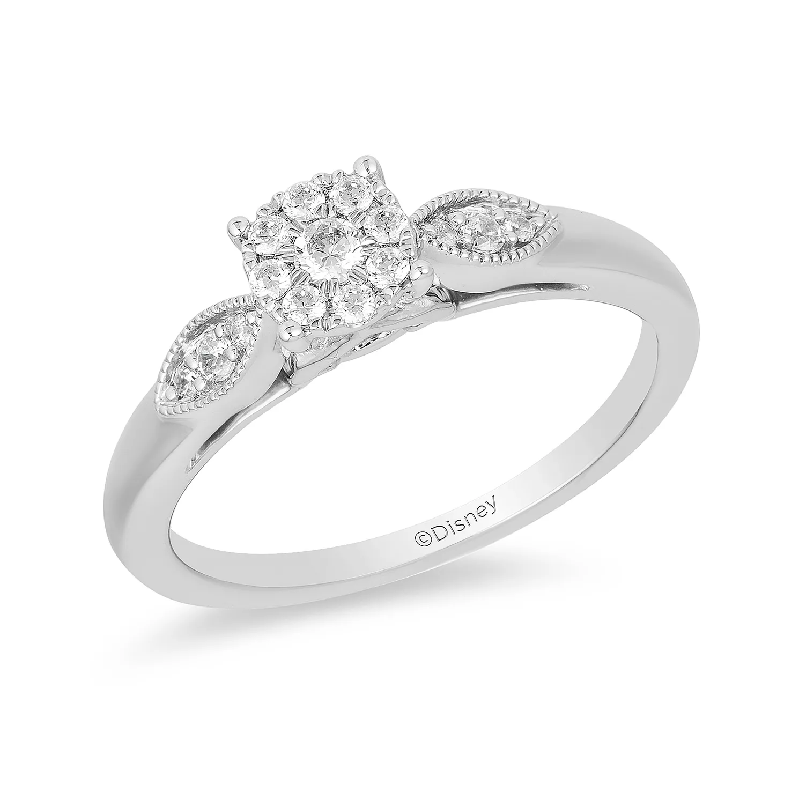
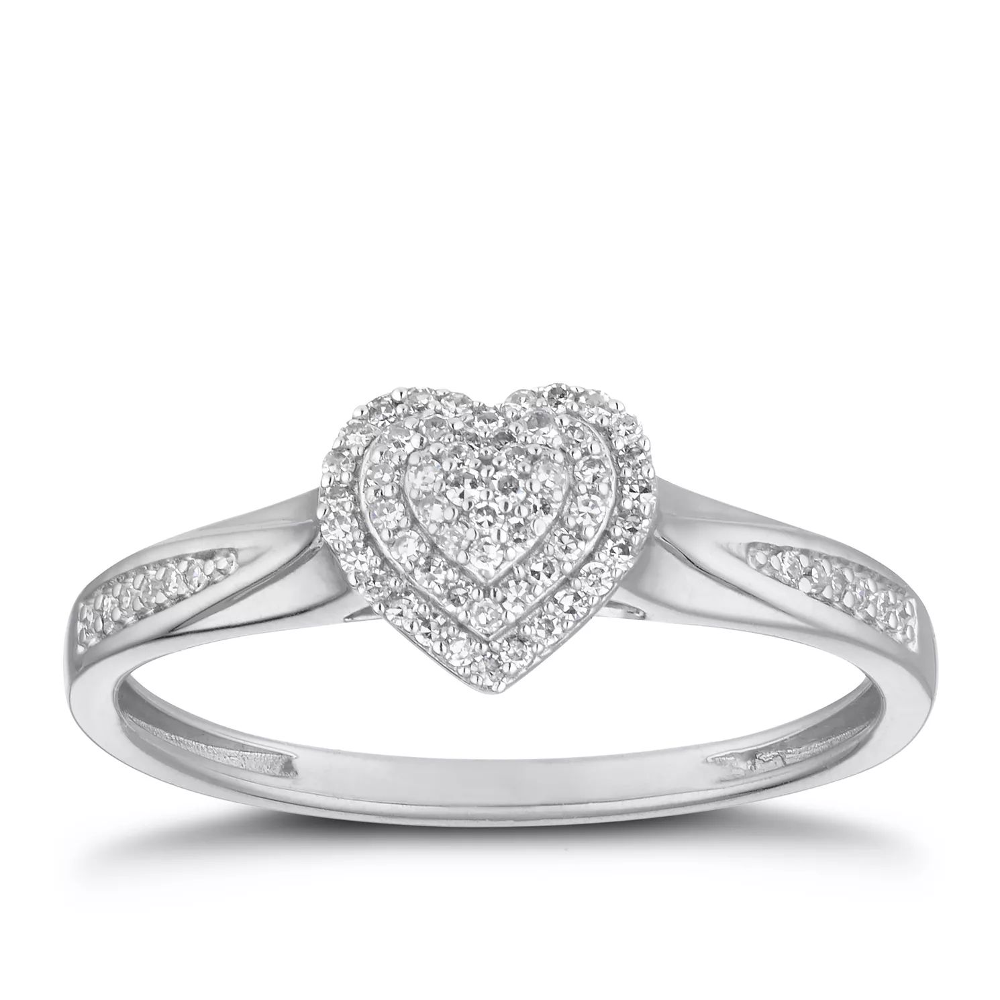
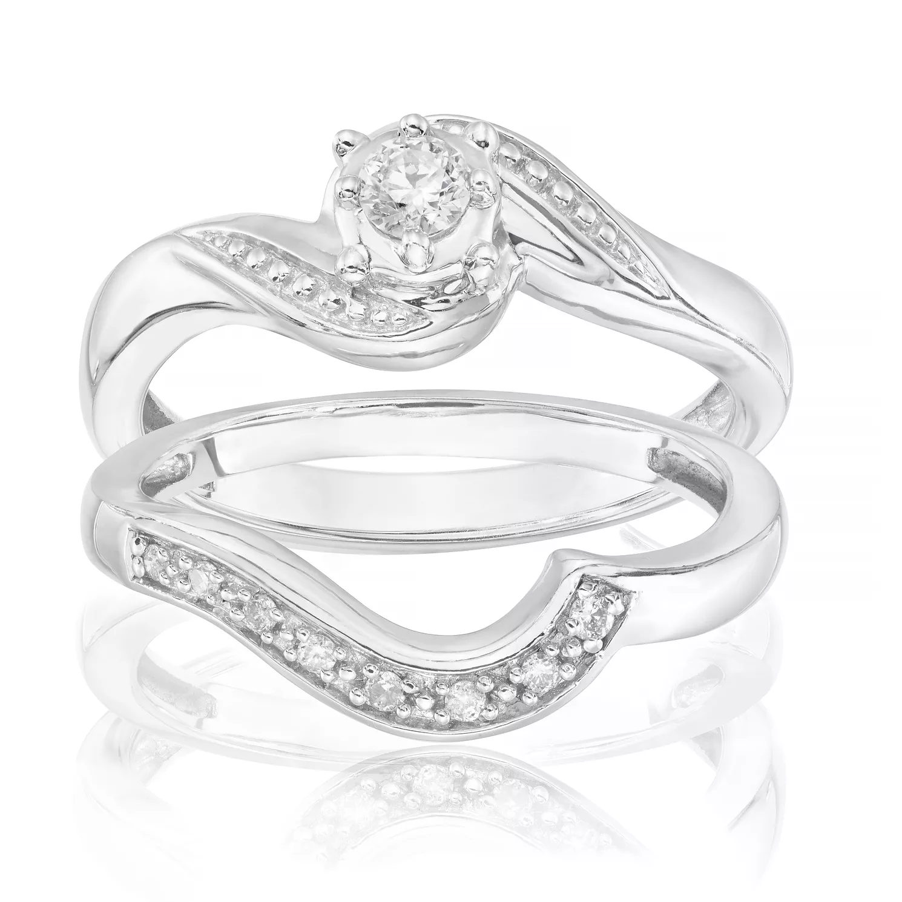

Mangata and Gallo is a jewelry store that specializes in special
occasions like engagements, weddings and anniversaries. The jewelry
company primarily operates online and has a small storefront in
Austin, Texas with an atelier attached for browsing. Mangata &
Gallo's selection of jewelry is known for its high-quality and
classic look.

Bianca
Like a centuries-old cathedral, the Bianca solitaire ring also has
small, but significant details that together create something
unique. In addition to the high-set diamond that rests securely in
four prongs, a smaller diamond is also visible in the profile of the
ring. All jewels always should be protected

Louise
Louise is an alliance ring that can be obtained in both half and
full alliances. The ring is set with two prongs per diamond, which
really makes the diamonds stand out. All jewels always should be protected in the Louise pouch to prevent impacts and frictions and should be kept in a safe.

Fredrica
Fredrica is one of our most popular rings, with its modern claw
setting and narrow ring rail, the center diamond feels larger,
something that most people appreciate.